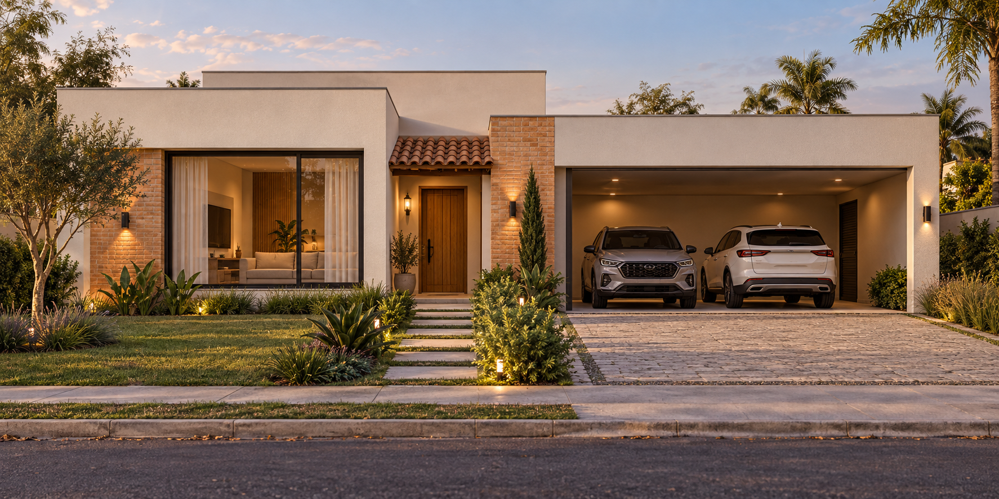
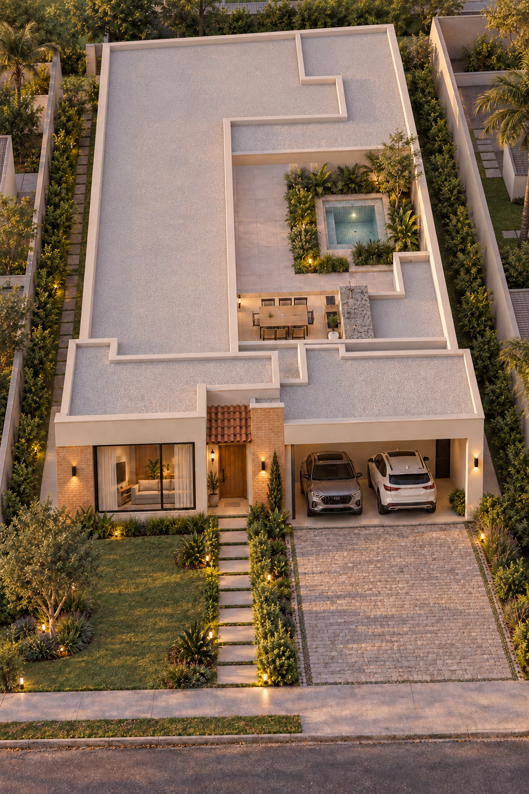
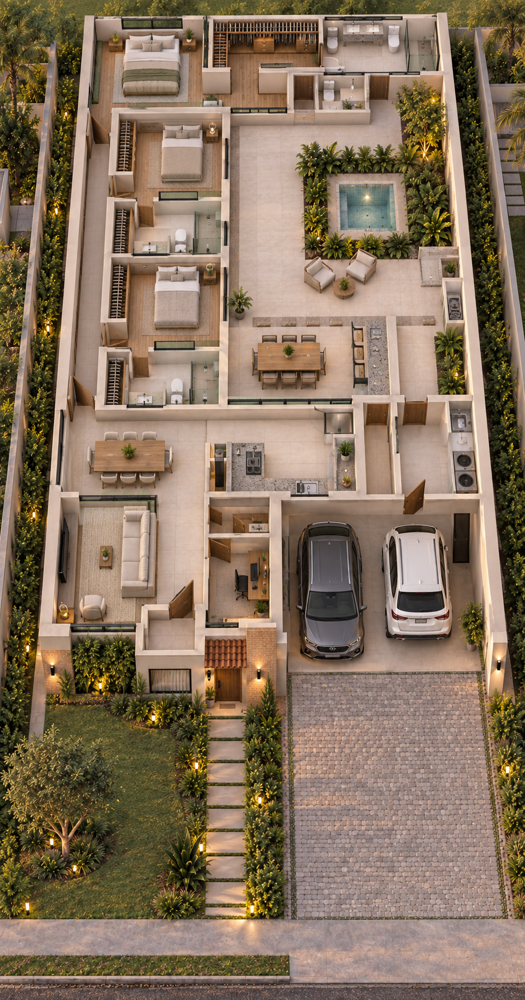

Volumes simples
Cobertura principal embutida e um pequeno telhado colonial marcando a entrada.

RESIDENCIAL CASA DO LAGO · QUADRA B · LOTE 29
Linhas contemporâneas.
O acolhimento dos materiais naturais.

02 / A ESSÊNCIA
Uma casa de linhas simples, com textura, madeira e luz para acolher desde a chegada.
Cobertura principal embutida e um pequeno telhado colonial marcando a entrada.
Tijolinho aparente, porta de madeira e ferragens escuras em detalhes da fachada.
Vegetação junto aos caminhos e iluminação quente valorizando texturas e acesso.
Jacuzzi enterrada, de alvenaria e pastilhada, integrada ao espaço de convivência.
Imagens conceituais para discussão da arquitetura. A implantação e os ambientes serão refinados no desenvolvimento do projeto.

03 / A PLANTA
A planta original como ponto de partida. Na proposta, a piscina dá lugar a uma jacuzzi enterrada e pastilhada.
Arraste para explorar · Role para aproximar · No celular, use dois dedos para zoom
04 / O LUGAR
Explore a imagem do condomínio e seus acessos.
Arraste para explorar · Role para aproximar · No celular, use dois dedos para zoom